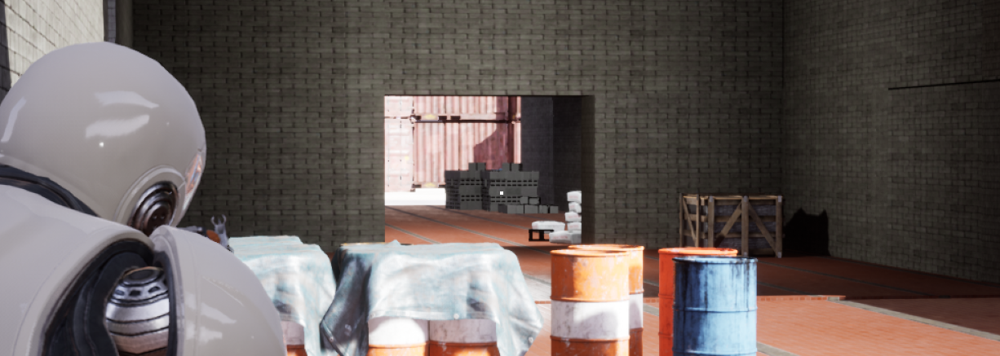

Unreal Engine 4
Przy pomocy silnika UnrealEngine 4 i VisualStudio 2017 zrobiłem prostą strzelankę trzecioosobową, w którą można grać w trybie wieloosobowym. Do tego wykorzystałem poradniki z YouTube i wiele rozwiązań z Wikipedii. Myślę, że filmiki z poszczególnych etapów pisania i odnośnik do repozytorium pokażą lepiej niż opis postępy w poszczególnych etapach tworzenia gry. Oczywiście jest jescze dużo elementów do poprawienia i zrobienia. Grę tworzę samodzielnie. Poświęciłem na nią ponad rok.
Ta gra to strzelanka z perspektywy trzeciej osoby. Celem jest przetrwanie kolejnych fal botów i wybuchających kul. Można grać z przyjaciółmi. Tryb wieloosobowy jest oparty o plugin AdvancedSteamSession. Wzorowałem się na Hi-Life i Counter-Strike.
Podczas tworzenia tej gry miałem możliwość lepszego zrozumienia C++, poznania silnika UnrealEngine 4 i schematów blokowych. Mogłem zaimplementować wiele ciekawych rozwiązań.